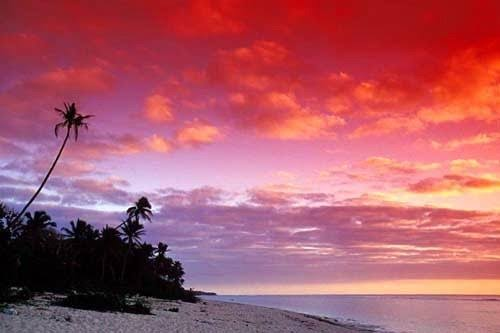

Malo E Lelei!
Welcome to the Friendly Islands.

Welcome to the Friendly Islands.
Tonga, officially known as the Kingdom of Tonga, is a Polynesian island nation located in the South Pacific Ocean. It consists of more than 170 islands, of which around 45 are inhabited, and is divided into four main island groups: Tongatapu, Vavaʻu, Haʻapai, and the Niuas. The capital city, Nukuʻalofa, is located on Tongatapu, the largest and most populated island. Tonga is often called "The Friendly Islands," a name given by Captain James Cook because of the warm hospitality shown by the Tongan people during his visits in the 18th century. Tonga is unique among Pacific nations because it is the only country in the region that has never been fully colonized by a foreign power. It has maintained its monarchy for centuries and today is a constitutional monarchy. The nation is known for its strong sense of community, respect for tradition, beautiful beaches, coral reefs, tropical climate, and deep cultural heritage. Family, faith, and respect for others remain central values in everyday life.
Traditional Tongan food reflects the islands' natural resources and the importance of sharing meals with family and the community. Root crops such as taro, yam, cassava, and sweet potato are staple foods, while fresh seafood including fish, octopus, and shellfish is abundant. Coconut is one of the most important ingredients and is commonly used in both savory dishes and desserts through coconut cream and grated coconut. Many traditional meals are prepared in an ʻumu, an underground earth oven where meats, vegetables, and seafood are wrapped in leaves and slowly cooked over heated stones. Popular dishes include Lu Pulu, made with corned beef or lamb wrapped in taro leaves and cooked with coconut cream, ʻota ʻika, fresh raw fish marinated in coconut cream and citrus juice, roasted pig prepared for celebrations, and sweet desserts such as cassava pudding and keke ʻisite. Food plays an important role in Tongan celebrations, church gatherings, weddings, birthdays, and community feasts.
Tongan traditions have been passed down through generations and continue to play an important role in modern life. Respect for elders, family members, chiefs, and guests is one of the highest cultural values. People are taught from a young age to show humility, kindness, and generosity in their words and actions. The Kava Ceremony is one of Tonga's most respected traditions. During this ceremony, a drink prepared from the kava root is shared according to traditional customs. The ceremony symbolizes unity, respect, and hospitality and is performed during royal occasions, important community events, religious celebrations, and special family gatherings. Traditional celebrations often include the Lakalaka, Tonga's national dance. This performance combines graceful movements, singing, poetry, and storytelling to preserve history and honor important occasions. Traditional clothing such as the taʻovala, a woven mat worn around the waist, is still commonly worn for church services, weddings, funerals, graduations, and formal events as a sign of respect.
Tongan culture is built on strong family relationships, Christian faith, respect for tradition, and community responsibility. Extended families often live close together and support one another through daily life and important events. Hospitality is a defining characteristic of Tongan society, and visitors are commonly welcomed with generosity, shared meals, and warm friendship. Christianity has been a major influence on Tongan society since the 19th century. Sunday is widely observed as a day of worship and rest, with most businesses closed while families attend church and spend time together. Religious celebrations and church activities continue to be an important part of community life. Music, dance, storytelling, weaving, wood carving, and tapa cloth making are all valued cultural practices that help preserve Tonga's history and identity. Although Tonga continues to modernize, many people remain proud of their customs and traditions, ensuring that future generations continue to learn and celebrate their unique cultural heritage.